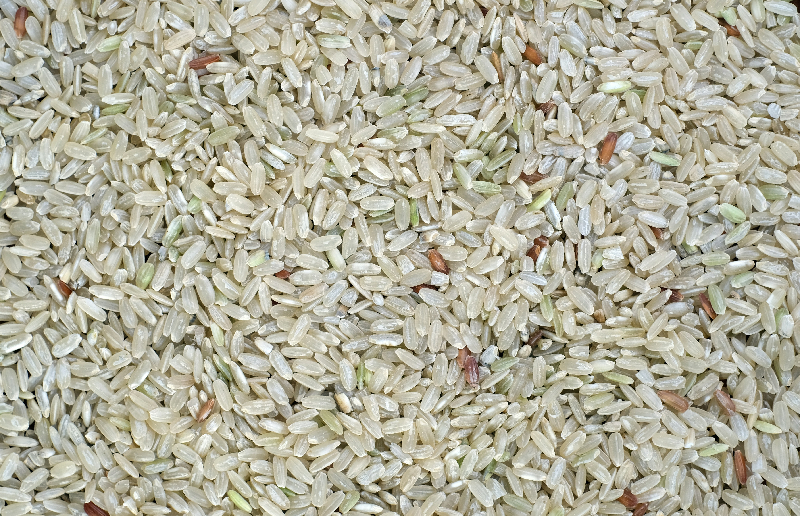

Anasayfa
Sütlaç Tarifi
Malzemeler
- 1 litre süt
- 1 çay bardağı pirinç
- 1 su bardağı toz şeker
- 1 yemek kaşığı nişasta
- 1 paket vanilin
- 1,5 su bardağı su
Malzeme Görselleri



Yapılışı
-
Pirinci Haşlayın: Pirinci yıkayıp süzün. Tencereye alın, üzerine suyu
ekleyin ve pirinçler yumuşayana kadar haşlayın.
-
Sütü Ekleyin: Haşlanmış pirincin üzerine sütü ekleyin ve karıştırarak
kaynamaya bırakın.
-
Şekeri Ekleyin: Kaynamaya başlayan sütlacın içine şekeri ekleyin ve
karıştırarak pişirmeye devam edin.
-
Kıvam Almasını Sağlayın: Daha koyu bir sütlaç isterseniz, nişastayı
biraz suyla açıp tencereye ekleyin. Karıştırarak birkaç dakika daha
pişirin.
-
Vanilini Ekleyin: Sütlacı ocaktan almadan önce vanilini ekleyin ve
karıştırın.
-
Servis Edin: Sütlacı kaselere paylaştırın, soğumaya bırakın. Üzerine
tarçın serperek servis edin. Afiyet olsun!